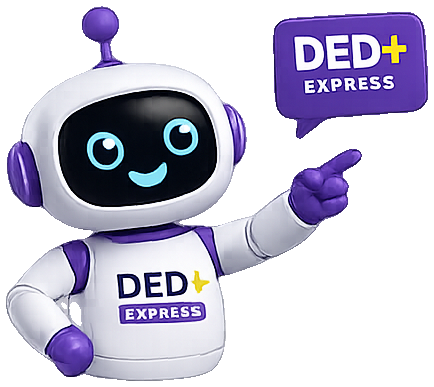

Este navegador está bloqueando o armazenamento local (pode ser uma janela anônima).
Você consegue estudar, mas o progresso não será salvo.

Vamos começar?
Escreva seu nome para o sistema guardar o seu progresso neste computador ou celular.
Como o seu progresso é guardado: tudo fica salvo apenas neste navegador (localStorage). Nada é enviado para a internet e ninguém mais vê as suas respostas. Se você limpar os dados do navegador ou usar outro aparelho, o progresso não vai junto — por isso existe o botão “Baixar meu progresso” na aba Meu progresso.